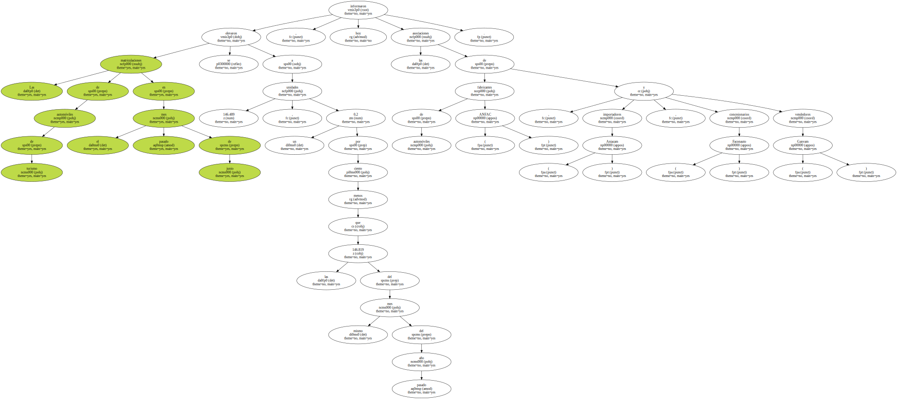
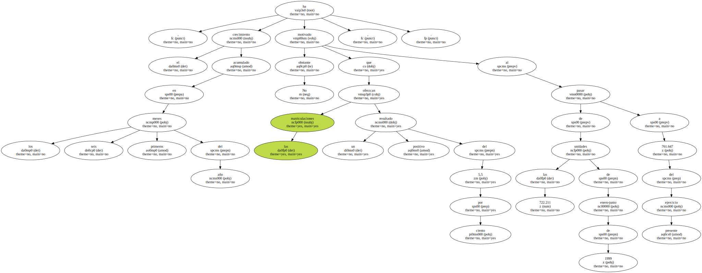
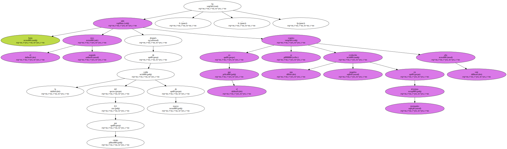
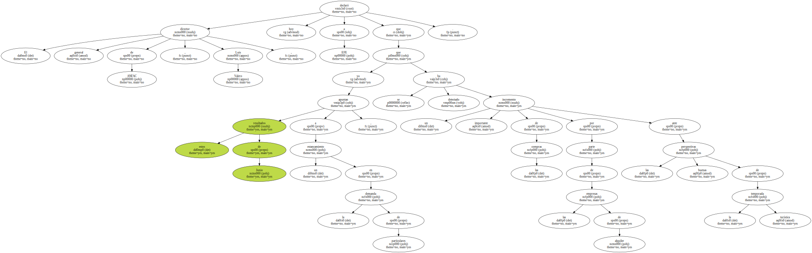
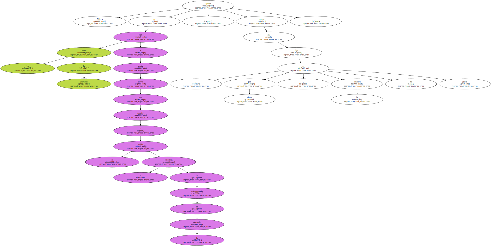
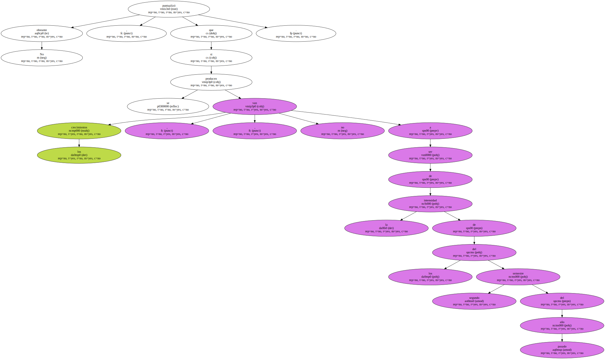
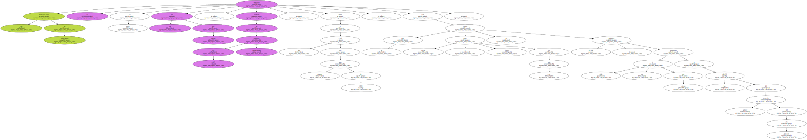
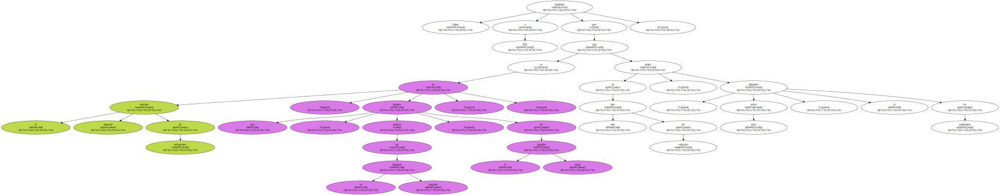
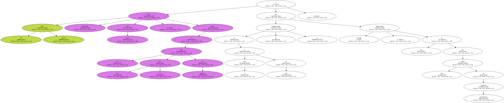

Las matriculaciones de automóviles de turismo en el pasado mes de junio se elevaron a 146.489 unidades , un 0,2 por ciento menos que las 146.819 del mismo mes del pasado año , informaron hoy las asociaciones de fabricantes de automóviles ( ANFAC ) , importadores ( Aniacam ) , concesionarios ( Faconauto ) y vendedores ( Ganvam ).
No obstante , el crecimiento acumulado en los seis primeros meses del año ha motivado que las matriculaciones ofrezcan un resultado positivo del 5,5 por ciento , al pasar de las 722.211 unidades de enero-junio de 1999 a 761.647 del presente ejercicio.
Junio ha sido el segundo mes , después de la caída del 0,5 por ciento de marzo , en el que se registra una evolución negativa en términos mensuales este año.
El director general de ANFAC , Luis Valero , declaró hoy a EFE que estos resultados de Junio apuntan a un estancamiento en la demanda de particulares , ya que se ha detectado un importante incremento de las compras por parte de las empresas de alquiler ante las buenas perspectivas de la temporada turística.
Valero apuntó que los próximos dos meses van a resultar claves para percibir si se ratifica la tendencia de estancamiento de la demanda , aunque dijo que , por ahora , la situación no es grave.
No obstante , puntualizó que los crecimientos , si se producen , no van a ser de la intensidad de los del segundo semestre del pasado año.
Con todo , Valero se muestra confiado en que el ejercicio actual cierre en el entorno de los 1,5 millones de turismos nuevos matriculados conforme a las previsiones iniciales que , en el caso del acumulado anual , está totalmente ajustado.

Las matriculaciones de todoterrenos se redujeron en Junio un 6,9 por ciento , producto de las 8.677 unidades matriculadas , frente a las 9.319 del mismo mes de 1999 , con lo que entre enero y Junio de este año ya suman 47.098 unidades , sólo un 1 por ciento superiores a las 46.632 del primer semestre del año pasado.
Valero manifestó a EFE que el mercado mensual de todoterreno " es una muestra , aunque sea un segmento pequeño , de la situación actual , ya que en este tipo de vehículos , prima , sobre todo , la demanda de particulares ".
El Plan Prever sigue mostrando buen tono , pese a los más de tres años de vigencia y en lo que va de año ya se han contabilizado 140.000 operaciones , un 21 por ciento más en términos interanuales.
